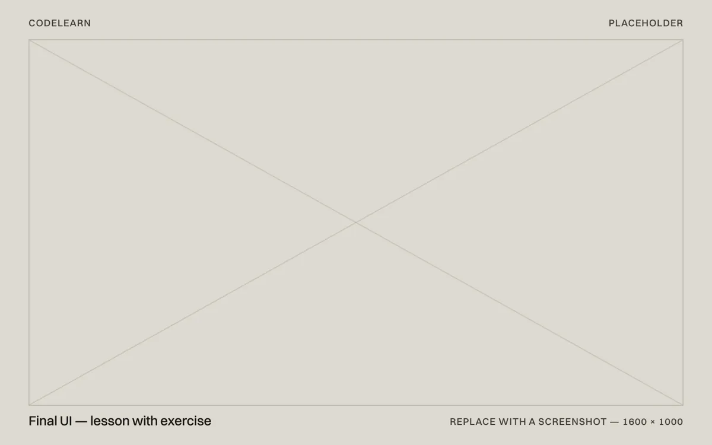
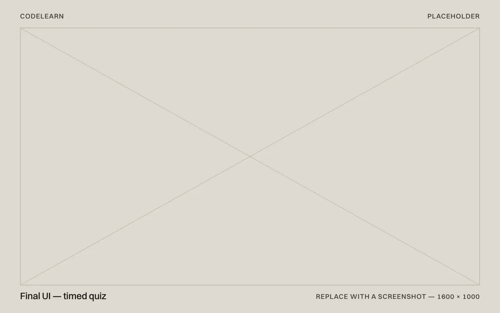
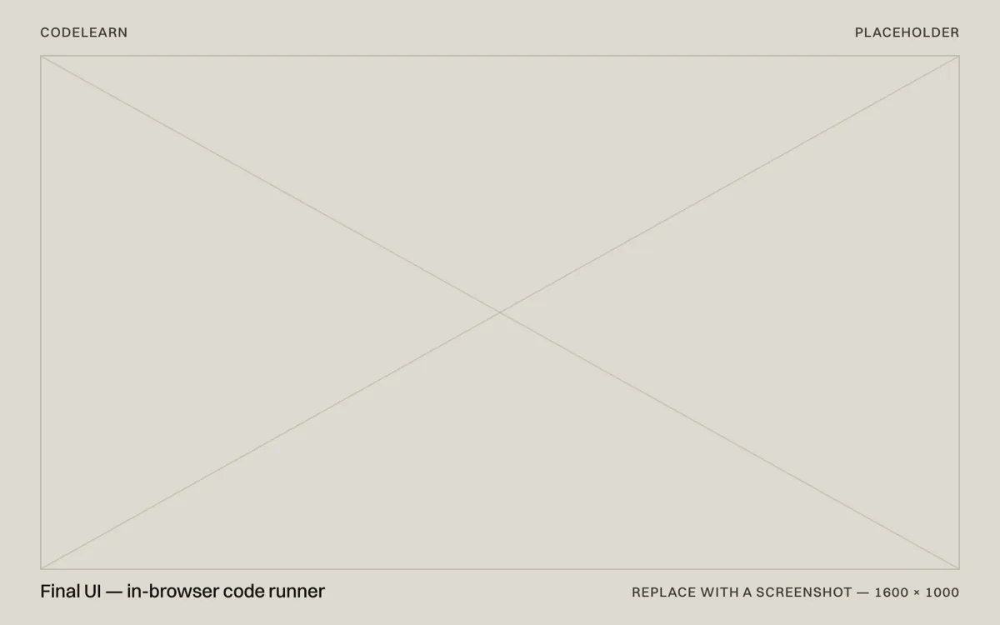

Case study 02 / 03 — Capstone
CodeLearn
A learning platform for Java and C++ — lessons, exercises, timed quizzes, an in-browser code runner and progress tracking.
- Role
- System developer (capstone)
- Timeline
- Sep 2024 – Apr 2025
- Team
- Capstone team, Trimex Colleges
- Platform
- Responsive web app
- Stack
- PHP (MVC), MySQL, JavaScript, JDoodle API
- Scope
- 76 lessons in 2 languages

At a glance
- Problem
- First-time programmers get lost when a lesson leans on something they haven’t learned yet.
- Solution
- A PHP MVC platform with 38 topics per language in strict reading order, exercises, timed quizzes and an in-browser code runner.
- Outcome
- 76 lessons across Java and C++, quiz scores graded on the server, and progress students can see.
01 — Context
Learning to code shouldn’t start with feeling lost
CodeLearn was our capstone project at Trimex Colleges: a web platform for learning Java and C++ from zero. It was built for students writing their first programs — people for whom one unexplained keyword can be the moment they give up.
My part covered system design, coding, testing and the technical presentation.
TODO(john):Add your team size and your own responsibilities — which modules you built.
Constraints
- Two languages, one experience — Java and C++ had to feel like the same course.
- Practice without setup: beginners can’t be asked to install a compiler first.
- Scores that can be trusted, because quizzes feed a student’s progress record.
02 — Requirements
Where beginners get stuck
Three problems shaped what the system had to do.
Order matters more than content.A lesson that uses something not yet taught loses people, however well it’s written. So the curriculum follows one rule: each topic may only use what came before it.
Practice has to be close.Switching to an IDE to try one line breaks momentum. Topics come with exercises, and code runs right in the browser.
Confidence comes from quick feedback.Short, timed quizzes and a visible progress record show learners how far they’ve come, not just what’s left.
“Input arrives before conditionals because a program that cannot read anything has nothing interesting to branch on; functions arrive before objects because a method is a function with a receiver.”
The curriculum, in reading order
- 01 BasicsIntroduction, syntax & comments, input & output, data types & variables, type casting, constants
- 02 OperatorsArithmetic, assignment, relational, logical, ternary, precedence
- 03 Conditionalsif, else, else-if, switch
- 04 Loopsfor, while, do-while, for-each, break & continue, nested loops
- 05 Data structuresStrings, arrays, multidimensional arrays, lists & vectors
- 06 FunctionsMethods & functions, scope & lifetime, overloading, recursion
- 07 MemoryPointers & references, memory management — C++ only
- 08 ObjectsClasses, constructors, encapsulation, inheritance, polymorphism; interfaces and packages in Java
- 09 ErrorsException handling
03 — System design
One request path, every failure in one place
CodeLearn follows a strict MVC flow. Every request takes the same path through the layers below, then comes back as a rendered view or a JSON response. Any failure along the way is thrown as one exception type and turned into the right response by a single handler — an error page for a browser, a JSON error for the API.
Request path
- 01Front controller
- 02Router
- 03Middleware
- 04Controller
- 05Service
- 06Repository
- 07MySQL
All SQL lives in repositories, and the curriculum lives in one catalogue — so the sidebar, contents page, previous/next links and routes can never drift out of sync.
04 — Features
What students get
Every screen works on a laptop or a phone, and practice never leaves the lesson.
Feature 01
Sign-up in one card
Sign in and create account share one card with a tab switch, so new students aren’t sent hunting for a separate page.
Feature 02
Fifteen seconds a question
Quizzes are brisk on purpose. Answers stay on the server — the browser never sees them — so a score means what it says.
Feature 03
Run it where you read it
An in-browser code runner means trying an idea takes seconds, not a setup guide.





05 — Build
Engineering that protects the learning
Most of the features above only hold if the code enforces them. These are the parts that do.
- ArchitecturePHP MVC: router, middleware, controllers, services and repositories, with every failure handled in one place.
- CurriculumOne catalogue drives the sidebar, the contents page, previous/next links and routes. Adding a topic is one row and one file.
- QuizzesAnswers live on the server. The browser gets prompts and options only, and the server scores the attempt.
- Code runnerCode runs through the JDoodle API, with a size cap and a timeout.
- SecurityCSRF tokens on every form and API call, checked by a test that fails if a new route is left unguarded.
- TestingFive suites cover routing, grading, every lesson and answer key, page rendering, and responsive layout.
- AccessibilityRead-aloud (text-to-speech) for lesson content.
06 — Results
What we shipped
A complete course in two languages, with practice and assessment built into the path rather than bolted on at the end.
- Lessons across Java and C++, in beginner reading order
- 76
- Per quiz question, graded on the server
- 15 s
- Automated test suites, including a responsive-layout guard
- 5
TODO(john):Add your evaluation results — how many students tested CodeLearn, your ISO 25010 or survey scores — and when you presented the thesis.
07 — Reflection
What I’d do next
Test with complete beginners earlier.Before the curriculum order was fixed, not after.
Give exercises hints.So a wrong answer teaches something instead of just stopping you.
Find where students stop.Measure the lessons people abandon, and rewrite those first.